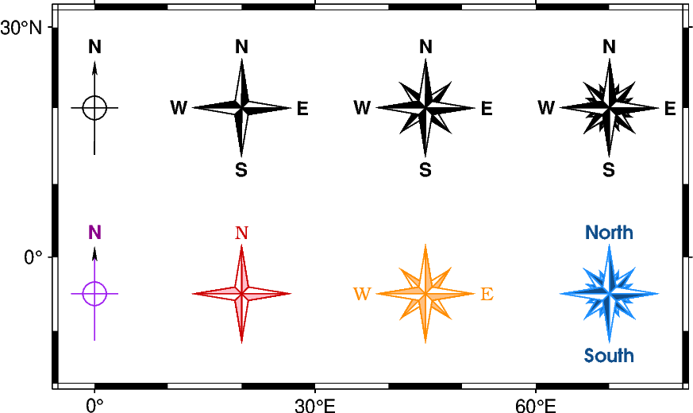

Note
Go to the end to download the full example code.
Directional map rose
The pygmt.Figure.directional_rose method allows to add directional roses on
maps. Using the method without any arguments will plot a rose at the Top Right corner,
but this example will focus on customizing its position and appearance.
Colors of the map roses can be adjusted using MAP_DEFAULT_PEN and
MAP_TICK_PEN_PRIMARY via pygmt.config. Customizing label font and
color can be done via FONT_TITLE.

import pygmt
from pygmt.params import Position
fig = pygmt.Figure()
y0 = 20
y1 = -5
width = "1.5c"
fig.basemap(region=[-5, 80, -17, 32], projection="M10c", frame=True)
# Plain rose of 1.5 cm width showing an arrow towards North, a cross indicating the
# cardinal directions, and a label for the North direction
fig.directional_rose(
width=width, labels=True, position=Position((0, y0), cstype="mapcoords")
)
# Fancy, 1.5 cm wide rose of level 1 and labels indicating the different directions
fig.directional_rose(
width=width,
labels=True,
position=Position((20, y0), cstype="mapcoords"),
fancy=True,
)
# Fancy, 1.5 cm wide rose of level 2 and labels indicating the different directions
fig.directional_rose(
width=width,
labels=True,
position=Position((45, y0), cstype="mapcoords"),
fancy=2,
)
# Fancy, 1.5 cm wide rose of level 3 and labels indicating the different directions
fig.directional_rose(
width=width,
labels=True,
position=Position((70, y0), cstype="mapcoords"),
fancy=3,
)
# Plain rose of 1.5 cm width showing an arrow towards North, a cross indicating the
# cardinal directions, and a label for the North direction. Colors of the rose and
# labels are defined via MAP_TICK_PEN_PRIMARY and FONT_TITLE, respectively
with pygmt.config(MAP_TICK_PEN_PRIMARY="purple", FONT_TITLE="8p,darkmagenta"):
fig.directional_rose(
width=width,
labels=True,
position=Position((0, y1), cstype="mapcoords"),
)
# Fancy, 1.5 cm wide rose of level 1 with only one label indicating the North direction.
# Colors of the rose and labels are defined via MAP_DEFAULT_PEN, MAP_TICK_PEN_PRIMARY
# and FONT_TITLE, respectively.
with pygmt.config(
MAP_DEFAULT_PEN="default,pink",
MAP_TICK_PEN_PRIMARY="red3",
FONT_TITLE="8p,Bookman-Light,red3",
):
fig.directional_rose(
width=width,
labels=["", "", "", "N"],
position=Position((20, y1), cstype="mapcoords"),
fancy=True,
)
# Fancy, 1.5 cm wide rose of level 2 with two labels indicating the West and East
# directions
with pygmt.config(
MAP_DEFAULT_PEN="default,lightorange",
MAP_TICK_PEN_PRIMARY="darkorange",
FONT_TITLE="8p,Bookman-Light,darkorange",
):
fig.directional_rose(
width=width,
labels=["W", "E", "", ""],
position=Position((45, y1), cstype="mapcoords"),
fancy=2,
)
# Fancy, 1.5 cm wide rose of level 3 with two labels indicating the North and South
# directions
with pygmt.config(
MAP_DEFAULT_PEN="default,Dodgerblue4",
MAP_TICK_PEN_PRIMARY="Dodgerblue",
FONT_TITLE="8p,AvantGarde-Demi,Dodgerblue4",
):
fig.directional_rose(
width=width,
labels=["", "", "South", "North"],
position=Position((70, y1), cstype="mapcoords"),
fancy=3,
)
fig.show()
Total running time of the script: (0 minutes 0.227 seconds)